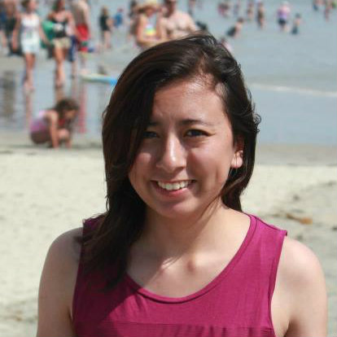
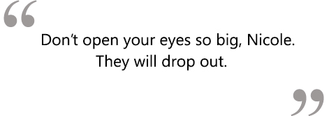

Public Relations: Nicole Schager


Nicknames: Schager, Nikoli, Chipmunk
Year: Sophomore
Major: Conservation and Resources Studies
Favorite childhood movie? I LOVE FINDING NEMO!!!
If you were a certain type of food, what would you be? BBQ Chicken pizza with a pile of vegetables on the side that I picked out. Pizza is not my favorite food, but I sure do have stories about pizza places.
Most Visited Websites: Facebook (of course), Calmail, bspace, berkeley.schedule.edu, Gmail, caldining (I check that around dinner time ;-) ), etsy, yahoo news, youtube, and my fan page
What do you see yourself doing after college? Exploring environmental policy!!! Wooohooo!!!
What do you like to do on your free time?
Free for 5 minutes: I have way cooler game apps, but I always seem to play spider solitaire. Free for 10-20 minutes: I surf the web.
Free for 30-40 minutes: I bake brownies since I am horrible at baking cookies.
Free for 1-5 hours: I go to Disneyland. If I can't go there, I see what my buddies are doing.
Free for 1-3 days: I travel somewhere.
...or else I am asleep.
If you had one song to describe you as a person, what would it be and why? Brighter than the Sun by Colbie Caillat! I love the greenery in the music video. So CNR!
If you had 24 hours to live, what would you do?
1.) Eat chocolate
2.) Catch fireflies (jf it was firefly season)
3.) Play with pets
4.) See relatives
5.) Visit Disneyland (to go on Space Mountain)